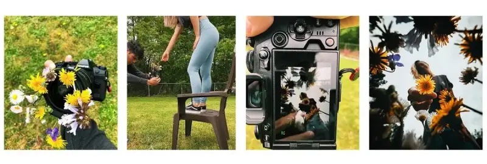
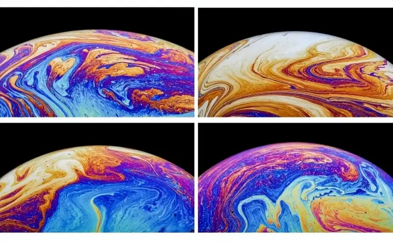
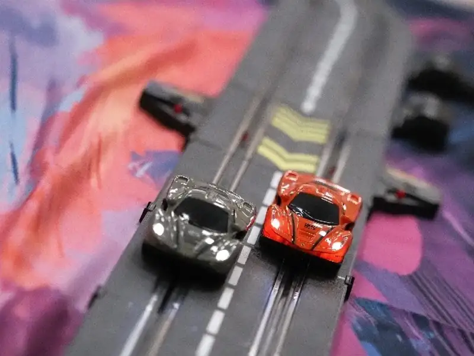
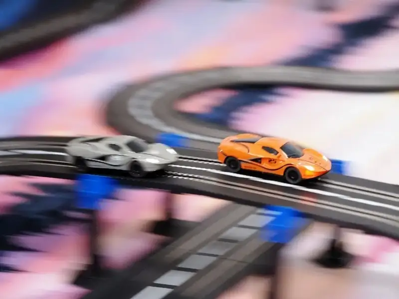
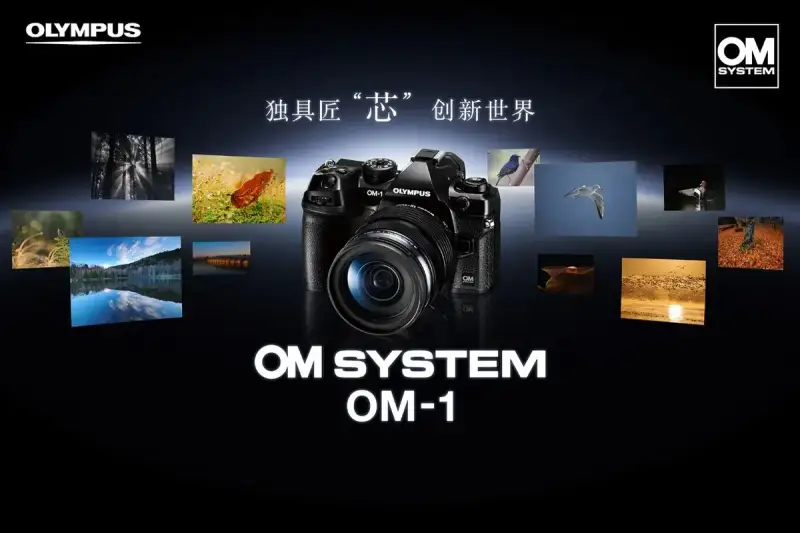

Any time, any place, even at home, OM SYSTEM can spark your inspiration and bring your ideas to life.
1. The photographer @Josemostajo is a seasoned travel photographer from Peru. On his social media, you can see stunning landscape work from his travels, hikes, and adventures. Even when a traveler stays home, he keeps pressing the shutter. Here is a shooting tip he prepared. Learn with him how to shoot creatively with a few flowers in your yard.
1. Prepare small flowers. Use an elastic hair tie to bind them, and fix the small wreath in front of the lens. When you shoot, the flowers become the foreground.
2. Have the subject stand on a steady, sturdy chair, hold one small flower, and smile at the lens. Set the focus on the flower in the person's hand.
3. Choose the shooting mode you like, tap to set the focus point, and press the shutter. You now have a shot you will be happy with.

Camera: OM-D E-M1 Mark III
Lens: M.ZUIKO DIGITAL ED 7-14mm F2.8 PRO
7mm | 1/800 s | f/4 | ISO 200
2. The photographer Yuan Ji is a contributor to National Geographic, a collaborating photographer for China National Geographic, an outside mentor at the Innovation and Entrepreneurship College of Qingdao University of Science and Technology, and head of the WE Innovation Studio at the Shanghai World Expo Museum. Mr. Yuan specializes in macro photography. As aco-author, his work appeared as the cover paper of From the ashes of ancient disaster in the leading international journal Nature Plants in 2022. When he cannot shoot in a studio or in nature, Mr. Yuan shares how he uses a 60mm f/2.8 macro lens at home to capture the colorful world of bubble wallpapers.
Props to prepare: a soft light source, a table, a black background cloth, a tripod, a straw, a shallow container, water, dish soap, and glycerin.
The most important preparation is bubbles that do not pop and that last a long time.
1. Use a shallow container, such as a lens cap or a shallow bowl. A shallow container keeps the soapy water close to the bubble and keeps its surface moist.
2. Add water, dish soap, and glycerin to the container and stir. Bubbles made only with dish soap pop very easily, so add some glycerin. After mixing, try blowing a bubble the size of a ping-pong ball. If it lasts more than 10 to 15 seconds, you can start shooting.
3. A black background shows the vivid colors of the bubble better. Black velvet, a black shirt, or a black sheet can all serve as a background.
4. Under everyday light, the lens cannot catch the color texture of the bubble. To capture good texture, place a soft light source above the bubble. If you do not have a professional soft light at home, set up a white cloth and shine a light on it to simulate the effect of a softbox.
5. When you shoot, set continuous shooting to catch the moment. In the early moments after a bubble forms, its color is not saturated, and the texture grows richer right before it pops. When you see rainbow-like layers on the bubble surface, blow a little air at it and the textures blend together. Press the shutter then, and you will get stunning bubble wallpapers, each with rich colors that never repeat.

Camera: OM SYSTEM OM-1
Lens: M.Zuiko Digital ED 60mm F2.8 Macro
60mm | f/16 | 1/160 s | ISO 200
3. Lu Zhenhua is a signed photographer for Ctrip and Visual China. He works across many fields, and his macro video for the centenary last year drew wide attention from the media and the macro community. On days at home, Mr. Lu also brings us fun shots of tiny scenes. Tools to prepare: a tripod, a soft light source, a sky background image on a computer, vegetables, fruit, drinks, and miniature figures.
Place the image on the computer screen behind the subject, use your imagination to set the scene, and shoot to create something original.
Camera: E-M5 Mark III
Lens: M.ZUIKO DIGITAL ED 60mm F2.8 Macro
4. Xu Cheng is a sports photographer who has covered F1, the China and Singapore rounds, and MXGP(the Motocross World Championship), and the ATP Masters, among other international events. Because of the pandemic, most domestic events stopped, but you can still practice your shooting.
Setup: an electric slot-car track and indoor light sources.
You can set up an electric slot-car track at home. For shooting a moving subject, a camera with accurate focus makes the work go smoothly.

Camera: OM SYSTEM OM-1
Lens: M.ZUIKO DIGITAL ED 40-150mm F2.8 PRO
Shutter priority | 82mm | 1/750 s | f/2.8 | EV +0.5 | ISO 1600

Camera: OM SYSTEM OM-1
Lens: M.ZUIKO DIGITAL ED 40-150mm F2.8 PRO
Shutter priority | 50mm | 1/90 s | f/2.8 | EV +0.5 | ISO 1600
